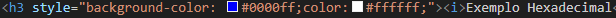
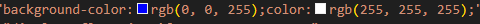
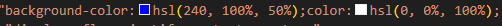
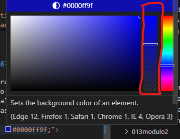

Cores

Como representar cores
As cores poden ser representadas de 3 formas alem do nome sao elas:

Exemplo Nome:
neste caso na atribuicao da cor chamamos pelo seu nome!
background-color: blue ;color: white;

Exemplo Hexadecimal
Neste caso a cor é formada tbm definido a comtidade de cada cor primaria (red ,blue , green)
Utilizando uma numeracao hexadecimal
Semdo definida a comtidade de cor : vermelha
depos azul e por utimo verde
background-color: #0000ff;color:#ffffff;"

Exemplo
Praticamente igual a hexa porem utiliza uma numeracao q vai de 0 a 255 para defitir o volume de
cada cor
background-color:rgb(0, 0, 255);color:rgb(255, 255, 255);

Exemplo
E logica e sintaticamente bem parecido com o modelo RBG
Porem utiliza os conceitos de
MATRIS , SATURACAO e LUMINOSIDADE.
background-color:hsl(240, 100%, 50%);color:hsl(0,
0%,100%);

observaçao:
- Tambem é posivel definir trasnparencia
- no vs code quando se pasa o mause por cima da cor definida
- aparecera uma janela na qual é posivel escolher a cor e tbm a trasparencia.
- a transoarencia adiciona mas um grupo de numeros a atribucao da cor
Exemplo
- rbg:
- background-color: rgba(0, 0, 255, 0.624);
- hexa:
- background-color: #0000ff9f;
- hsl:
- hsla(240, 100%, 50%, 0.624)
A demarcaçao na tabela define a trasparencia
